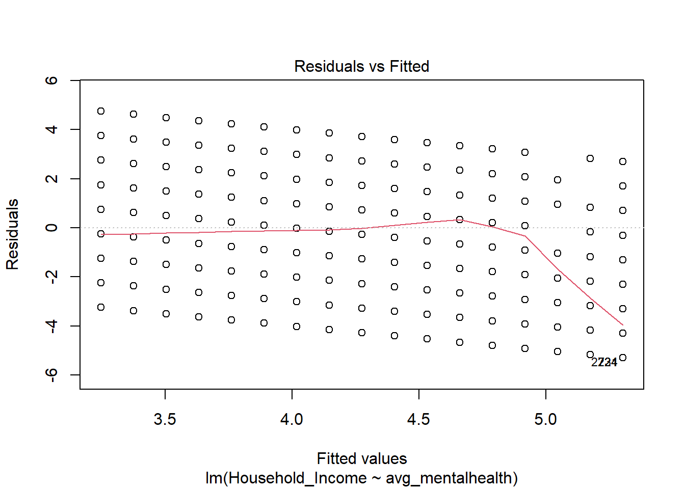
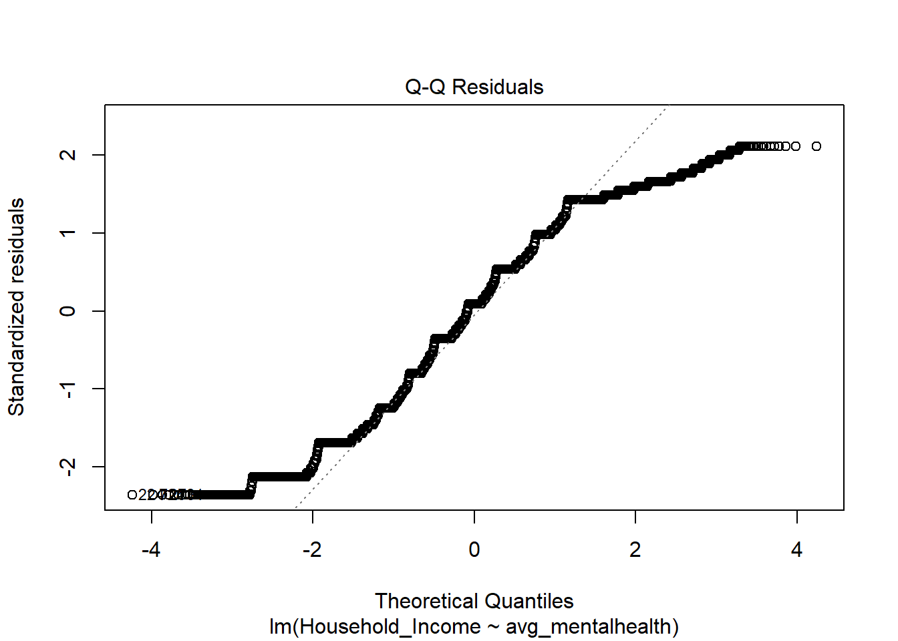
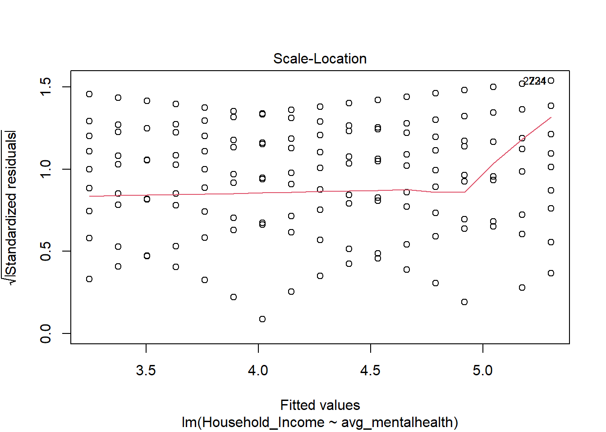
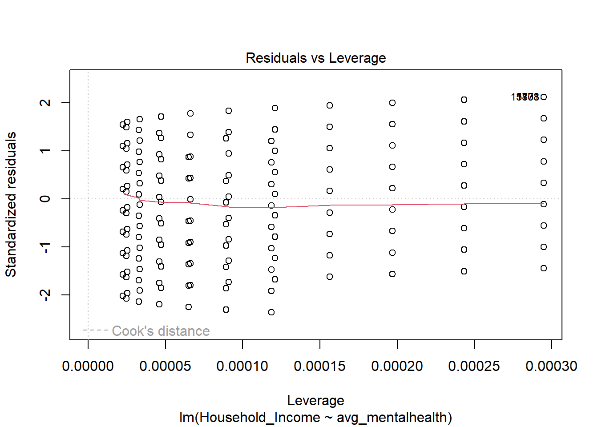

Here we provide a detailed analysis using more sophisticated statistics techniques.
## Main Questions - How does access to mental health services change based on factors such as income, education, and race? - How do measures of mental wellbeing (levels of worry, anxiety, etc.) change based on age, income, education, and race? - How does veteran/active duty status effect mental health?
This comes from the file analysis.qmd.
We describe here our detailed data analysis. This page will provide an overview of what questions you addressed, illustrations of relevant aspects of the data with tables and figures, and a statistical model that attempts to answer part of the question. You’ll also reflect on next steps and further analysis.
The audience for this page is someone like your class mates, so you can expect that they have some level of statistical and quantitative sophistication and understand ideas like linear and logistic regression, coefficients, confidence intervals, overfitting, etc.
While the exact number of figures and tables will vary and depend on your analysis, you should target around 5 to 6. An overly long analysis could lead to losing points. If you want you can link back to your blog posts or create separate pages with more details.
The style of this paper should aim to be that of an academic paper. I don’t expect this to be of publication quality but you should keep that aim in mind. Avoid using “we” too frequently, for example “We also found that …”. Describe your methodology and your findings but don’t describe your whole process.
Example of loading data
The code below shows an example of loading the loan refusal data set (which you should delete at some point).
library(tidyverse)
── Attaching core tidyverse packages ──────────────────────── tidyverse 2.0.0 ──
✔ dplyr 1.1.4 ✔ readr 2.1.5
✔ forcats 1.0.0 ✔ stringr 1.5.1
✔ ggplot2 3.5.1 ✔ tibble 3.2.1
✔ lubridate 1.9.3 ✔ tidyr 1.3.1
✔ purrr 1.0.2
── Conflicts ────────────────────────────────────────── tidyverse_conflicts() ──
✖ dplyr::filter() masks stats::filter()
✖ dplyr::lag() masks stats::lag()
ℹ Use the conflicted package (<http://conflicted.r-lib.org/>) to force all conflicts to become errors
data_clean <-read_rds("dataset/data_clean.rds") |>mutate(total_mentalhealth = Anxious_Frequency + Worry_Frequency + Little_Interest_Frequency + Depressed_Frequency)# Create analysis dataset for scatterplotsscatter_data <- data_clean |>mutate(total_mentalhealth = Anxious_Frequency + Worry_Frequency + Little_Interest_Frequency + Depressed_Frequency)# Calculate averages by incomeavg_mh_by_income <- scatter_data |>group_by(Household_Income) |>summarize(avg_mh =mean(total_mentalhealth),avg_anxiety =mean(Anxious_Frequency),avg_worry =mean(Worry_Frequency),avg_interest =mean(Little_Interest_Frequency),avg_down =mean(Depressed_Frequency) )# First plot - Income vs Total Mental Healthggplot(scatter_data, aes(x=Household_Income, y = total_mentalhealth)) +geom_point(alpha =0.01) +geom_smooth(method ="lm", se =FALSE, color ="blue") +labs(x ="Income", y ="Total Mental Health Score", title ="Income vs. Mental Health")
`geom_smooth()` using formula = 'y ~ x'
Warning: Removed 6519 rows containing non-finite outside the scale range
(`stat_smooth()`).
Warning: Removed 6519 rows containing missing values or values outside the scale range
(`geom_point()`).
# Second plot - All mental health metrics by incomeggplot(avg_mh_by_income) +geom_point(aes(x=Household_Income, y = avg_mh), alpha =0.01) +geom_smooth(aes(x=Household_Income, y = avg_mh), method ="lm", se =FALSE, color ="blue") +geom_point(aes(x=Household_Income, y = avg_anxiety), alpha =0.01) +geom_smooth(aes(x=Household_Income, y = avg_anxiety), method ="lm", se =FALSE, color ="red") +geom_point(aes(x=Household_Income, y = avg_worry), alpha =0.01) +geom_smooth(aes(x=Household_Income, y = avg_worry), method ="lm", se =FALSE, color ="green") +geom_point(aes(x=Household_Income, y = avg_interest), alpha =0.01) +geom_smooth(aes(x=Household_Income, y = avg_interest), method ="lm", se =FALSE, color ="purple") +geom_point(aes(x=Household_Income, y = avg_down), alpha =0.01) +geom_smooth(aes(x=Household_Income, y = avg_down), method ="lm", se =FALSE, color ="pink") +labs(x ="Income", y ="Average Mental Health Score", title ="Income vs. Mental Health Components")
`geom_smooth()` using formula = 'y ~ x'
Warning: Removed 1 row containing non-finite outside the scale range
(`stat_smooth()`).
`geom_smooth()` using formula = 'y ~ x'
Warning: Removed 1 row containing non-finite outside the scale range
(`stat_smooth()`).
`geom_smooth()` using formula = 'y ~ x'
Warning: Removed 1 row containing non-finite outside the scale range
(`stat_smooth()`).
`geom_smooth()` using formula = 'y ~ x'
Warning: Removed 1 row containing non-finite outside the scale range
(`stat_smooth()`).
`geom_smooth()` using formula = 'y ~ x'
Warning: Removed 1 row containing non-finite outside the scale range
(`stat_smooth()`).
Warning: Removed 1 row containing missing values or values outside the scale range
(`geom_point()`).
Removed 1 row containing missing values or values outside the scale range
(`geom_point()`).
Removed 1 row containing missing values or values outside the scale range
(`geom_point()`).
Removed 1 row containing missing values or values outside the scale range
(`geom_point()`).
Removed 1 row containing missing values or values outside the scale range
(`geom_point()`).
# Linear regression analysisincome_mh <-lm(total_mentalhealth ~ Household_Income, data = scatter_data)plot(income_mh)




summary(income_mh)
Call:
lm(formula = total_mentalhealth ~ Household_Income, data = scatter_data)
Residuals:
Min 1Q Median 3Q Max
-6.898 -1.872 -1.257 1.307 10.743
Coefficients:
Estimate Std. Error t value Pr(>|t|)
(Intercept) 6.898307 0.029902 230.69 <2e-16 ***
Household_Income -0.205184 0.005893 -34.82 <2e-16 ***
---
Signif. codes: 0 '***' 0.001 '**' 0.01 '*' 0.05 '.' 0.1 ' ' 1
Residual standard error: 2.835 on 44759 degrees of freedom
(6519 observations deleted due to missingness)
Multiple R-squared: 0.02637, Adjusted R-squared: 0.02635
F-statistic: 1212 on 1 and 44759 DF, p-value: < 2.2e-16
<<<<<<< HEAD
library(dplyr)library(ggplot2)library(maps)
Attaching package: 'maps'
The following object is masked from 'package:purrr':
map
Warning in left_join(us_map, data_by_state, by = "region"): Detected an unexpected many-to-many relationship between `x` and `y`.
ℹ Row 1 of `x` matches multiple rows in `y`.
ℹ Row 45 of `y` matches multiple rows in `x`.
ℹ If a many-to-many relationship is expected, set `relationship =
"many-to-many"` to silence this warning.
ggplot(us_map_data, aes(x = long, y = lat, group = group)) +geom_polygon(fill ="lightblue", color ="black") +theme_void() +labs(title ="Map of the United States")
Warning: There was 1 warning in `summarise()`.
ℹ In argument: `across(...)`.
ℹ In group 1: `Race = 1`.
Caused by warning:
! The `...` argument of `across()` is deprecated as of dplyr 1.1.0.
Supply arguments directly to `.fns` through an anonymous function instead.
# Previously
across(a:b, mean, na.rm = TRUE)
# Now
across(a:b, \(x) mean(x, na.rm = TRUE))
ggplot(avg_freqs, aes(x = Race, y = Mean, fill = Variable)) +geom_bar(stat ="identity", position ="dodge") +labs(x ="Race", y ="Mean Value of Mental Health Ratings", title ="Average Mental Health Concern Frequencies by Race") +facet_wrap(~ Variable) +theme(axis.text.x =element_text(angle =25))
50f4f57e7ee05a028e285104bb7d6bc038af2ece ## Note on Attribution
In general, you should try to provide links to relevant resources, especially those that helped you. You don’t have to link to every StackOverflow post you used but if there are explainers on aspects of the data or specific models that you found helpful, try to link to those. Also, try to link to other sources that might support (or refute) your analysis. These can just be regular hyperlinks. You don’t need a formal citation.
If you are directly quoting from a source, please make that clear. You can show quotes using > like this
> To be or not to be.
To be or not to be.
Rubric: On this page
You will
Introduce what motivates your Data Analysis (DA)
Which variables and relationships are you most interested in?
What questions are you interested in answering?
Provide context for the rest of the page. This will include figures/tables that illustrate aspects of the data of your question.
Modeling and Inference
The page will include some kind of formal statistical model. This could be a linear regression, logistic regression, or another modeling framework.
Explain the ideas and techniques you used to choose the predictors for your model. (Think about including interaction terms and other transformations of your variables.)
Describe the results of your modelling and make sure to give a sense of the uncertainty in your estimates and conclusions.
Explain the flaws and limitations of your analysis
Are there some assumptions that you needed to make that might not hold? Is there other data that would help to answer your questions?
Clarity Figures
Are your figures/tables/results easy to read, informative, without problems like overplotting, hard-to-read labels, etc?
Each figure should provide a key insight. Too many figures or other data summaries can detract from this. (While not a hard limit, around 5 total figures is probably a good target.)
Default lm output and plots are typically not acceptable.
Clarity of Explanations
How well do you explain each figure/result?
Do you provide interpretations that suggest further analysis or explanations for observed phenomenon?
Organization and cleanliness.
Make sure to remove excessive warnings, hide most or all code, organize with sections or multiple pages, use bullets, etc.
This page should be self-contained, i.e. provide a description of the relevant data.
 ## Main Questions - How does access to mental health services change based on factors such as income, education, and race? - How do measures of mental wellbeing (levels of worry, anxiety, etc.) change based on age, income, education, and race? - How does veteran/active duty status effect mental health?
## Main Questions - How does access to mental health services change based on factors such as income, education, and race? - How do measures of mental wellbeing (levels of worry, anxiety, etc.) change based on age, income, education, and race? - How does veteran/active duty status effect mental health?